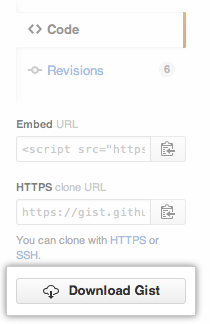
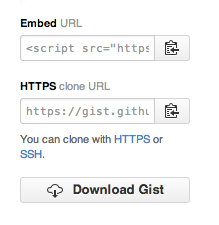

Gists are a great way to share your work. You can share single files, parts of files, or full applications.
Every gist is a Git repository, which means that it can be forked, cloned, and manipulated in every way.
Types of gists
There are two types of gists: public gists and secret gists. Additionally, if you are not logged into GitHub when you create your gist, it will be an anonymous gist. For steps on creating gists, see "Creating gists".
Public gists
Public gists show up in Discover, where people can browse new gists as they're created. They're also searchable, so you can use them if you'd like other people to find and see your work.
Secret gists
Secret gists don't show up in Discover and are not searchable. Use them to jot down an idea that came to you in a dream, create a to-do list, or prepare some code or prose that's not ready to be shared with the world.
Secret gists don't count as private repositories. You can create as many secret gists as you like, even if you have a free GitHub account.
Warning: Secret gists aren't private. If you send the URL of a secret gist to a friend, they'll be able to see it. However, if someone you don't know discovers the URL, they'll also be able to see your gist. If you need to keep your code away from prying eyes, you may want to create a private repository instead.
Anonymous gists
If you create a gist without logging into GitHub, it will be an anonymous gist. Anonymous gists can be public or secret. To delete an anonymous gist on GitHub.com or GitHub Enterprise, contact GitHub support or your site administrator, respectively. Please provide the URL of the gist you wish to delete.
Discovering and searching for other people's gists
You can discover gists others have created by going to the gist home page and clicking All Gists. This will take you to a page of all gists sorted and displayed by time of creation or update. You can also search gists by language with Gist Search. Gist search uses the same search syntax as code search.
Forking and cloning gists
Since gists are Git repositories, you can view their full commit history, complete with diffs. You can also fork or clone gists. For more information, see "Forking and cloning gists".
Downloading gists
You can download a ZIP file of a gist by clicking the Download Gist button on the right side of the gist.

Embedding and downloading gists
You can embed a gist in any text field that supports Javascript, such as a blog post. To get the embed code, click the clipboard icon next to the Embed URL of a gist.
